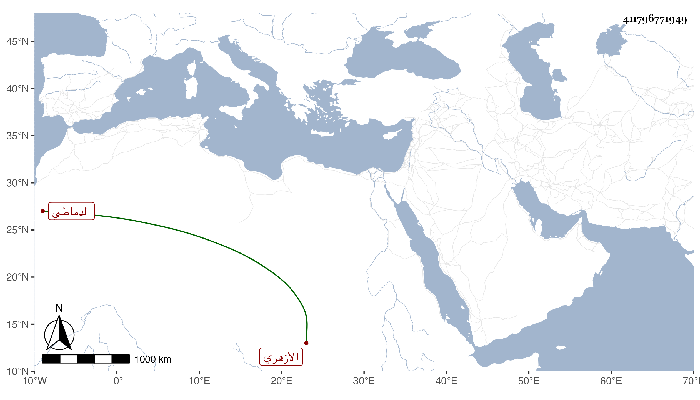

0902Sakhawi.DawLamic.ITO20230111-ara1.EIS1600.411796771949
Biography ID: 411796771949
أحمد بن حسن بن إبراهيم شهاب الدين الدماطي ثم الأزهري كان بارعا في الكتابة والتذهيب يجيد القراءة في الجوق ممن اشتهر ببني الجيعان ، وحج غير مرة وجرت على يديه كثير من المبرات وصار خبيرا بتفرقتها بل جدد جامع جزيرة الفيل وأحكمه وأتقنه مستعينا في ذلك بما يأخذه من الرؤساء ونحوهم وربما توفر له منه ما يضمه لما يتحصل له من جهاته ونحوها بحيث خلف من النقد وغيره ما يوازي ثلاثة آلاف دينار بل كان الظن به أكثر ، كل ذلك مع تعاني الظرف مع كثافته والسخرية بالناس حتى بمن عرف به مع ركاكته وقد عزره أبو البركات الهيتمي بشيء سلكه في سخريته بقوالح وإلا مروراء هذا ، وبلغني أنه لم يتزوج قط وأنه ربما نظم ورأيته كتب على مجموع البدري :
| يا شمس بدر جاءني | بوجهه ينفي الحزن |
| وقال صفني واختصر | فقلت مجموع حسن |
مات في ذي القعدة سنة تسعين وقد قارب السبعين ظنا عفا الله عنه وإيانا .
